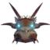
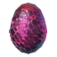

Moder: local, invocação e dicasModer é a mãe dos dragões da Montanha e o quarto chefe. Ataca do ar e no chão, e o seu sopro gelado congela quem estiver à frente. Um bom arco e proteção contra o frio decidem este combate.
| Bioma | Montanha |
|---|---|
| Vida | 7.500 |
| Item de invocação |  3 × Ovo de Dragão |
| Fraco contra | Fogo |
| Resistente a | – |
| Imune a | Geada, Espírito |
| Deixa cair | 10 × Lágrima de dragão Troféu do Moder |
| Poder dos Guardiões | Vento sempre a favor ao navegar, mais 300 de peso de carga, movimento 10% mais rápido e 50% de resistência a Geada. |
Moder: mostrar os altares no mapa
Como encontrar Moder
O altar de Moder fica no topo de uma montanha, normalmente num planalto largo e plano. Pedras de runa vermelhas em ruínas de pedra na Montanha e nas Cavernas de gelo marcam-no no teu mapa.
Para a invocar, coloca 3 Ovos de Dragão no altar. Os ovos estão em ninhos na Montanha. Cada um pesa 200 e não passa por portais, por isso tens de os levar um de cada vez, ou numa só viagem com três jogadores.
Preparação
- Veste a armadura de lobo: o peitoral e a capa protegem-te do frio. Sem ela, precisas de Hidromel de resistência ao gelo durante toda a viagem.
- Leva o melhor arco que tiveres, de preferência o Dente de Draugr, e 150 flechas ou mais. Moder é fraca contra o fogo, por isso as Flechas de fogo são baratas e fortes. As Setas de Obsidiana e as Flechas venenosas também são boas. As Flechas de gelo não fazem nada.
- Leva uma Espada de prata ou outra arma corpo a corpo melhorada para as fases no chão.
- Leva Hidroméis de regeneração média e hidroméis de energia, e come comida que dê muita vida, como Ensopado de serpente, Salsichas e Ensopado de nabos.
- Limpa o planalto de Lobos, Dragões e Golems de Pedra antes de começares, e monta um portal com um pequeno abrigo abaixo do cume.
Ataques
- Rajada de gelo (no ar): sobrevoa-te e dispara uma linha de projéteis de gelo que explodem em cristais. Continua a correr para o lado.
- Sopro gelado (no chão): um cone largo de gelo em frente que te deixa muito lento. Vai para o lado dela assim que baixar a cabeça.
- Mordida e garras: de perto, morde e dá patadas. Ambos os ataques podem ser bloqueados com um bom escudo.
Dicas e truques
- Dispara sempre que ela estiver no ar ou a pousar. A trajetória de voo é lenta e previsível, por isso a maioria das flechas acerta.
- Quando ela pousar, contorna-a até ao flanco. O sopro só atinge o que está à frente dela, e de lado podes atacar à vontade.
- Se o gelo te atingir, ficas lento e fácil de atingir outra vez. Se estiveres congelado, bloqueia em vez de fugires.
- Os cristais de gelo da rajada podem ser destruídos e servem de pequena cobertura em campo aberto.
- O poder de Massa Óssea torna as fases corpo a corpo muito mais seguras. Com o arco, o poder de Eikthyr ajuda-te a não parar de te mexer.
- Leva os ovos lá para cima antes do combate e deixa-os junto do altar. Não desaparecem.
Recompensa
Moder deixa 10 Lágrimas de dragão e o seu troféu. Com as lágrimas constróis a Mesa de artesanato, que desbloqueia o Moinho, o Alto forno e a Roda de fiar, e com eles o equipamento da Planície.
Depois de a derrotares, Haldor vende Bolsos maiores, uma fila extra no inventário, e a Bruxa do Pântano acrescenta vários itens à sua oferta.
O seu Poder dos Guardiões dá-te vento a favor em todas as viagens e muito mais peso de carga. É o favorito de qualquer navegador e de quem transporta minério.